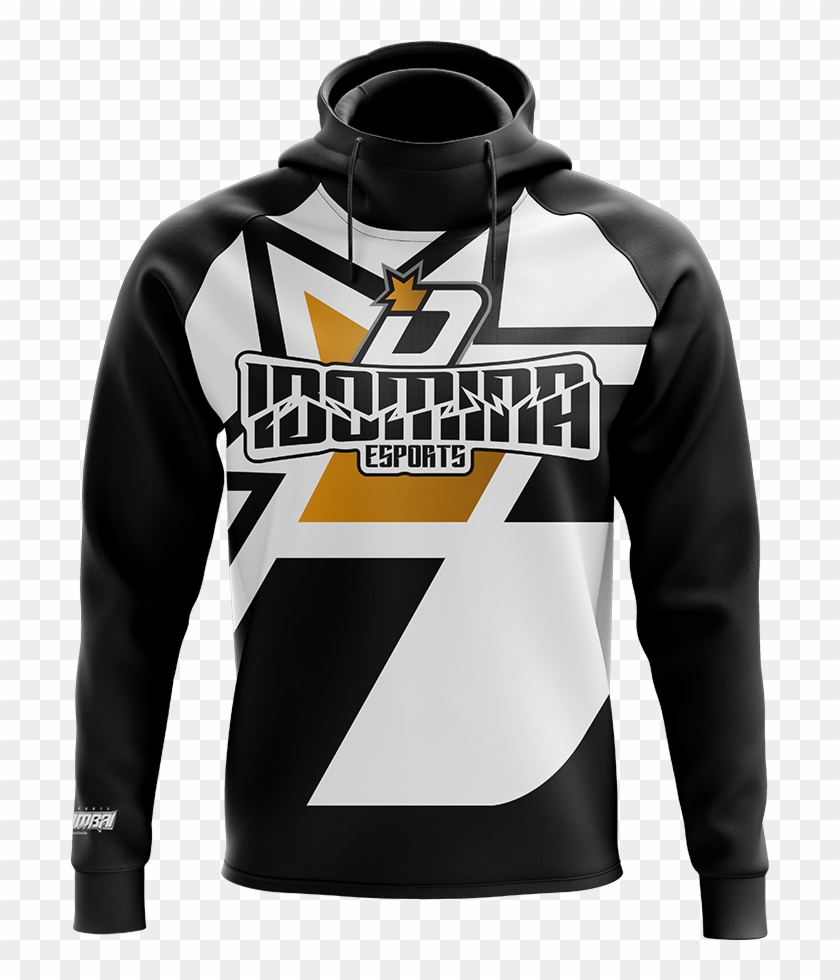

How to Select the Perfect Cool Hoodies For Men
The best hoodies are for men. The reason for the hoodie is an important factor. However, it can also be a fashion statement. It is important to consider comfort when chilling, with either a pullover option or a get-a-zipped option. It is the fabric that makes a Hoodie attractive for the buyer that matters most. Although there are endless options in terms of design, fabric, fashion look, and comfort arrangements, it is worth focusing on your personal preferences when choosing a hoodie for you. Let's look at some common types.
Universal hoodies
The universal appeal of the classic hoodie is its simplicity as a hooded sweater. While there have been many modifications to hoodie design, keeping in line with evolutions in style and fit but the classic hooded design is still very popular. Vestit Planet The classic design that transforms a sweater into a jacket by attaching a collar and hood is very well-known.
Hoodie to build a following
Hoodies can have graphic designs that depict the favourite lines of a musician or include a bit or parody of a popular song. These hoodies are trendy, fashionable, and can be attached to famous celebrities with a huge fan base.
A hoodie is a fashion statement
Hoodies can be a unique choice of garment to make a statement and complement the style and personality of the wearer. Hoodies have been associated with rebel feelings, making them a popular choice for young people. Hoodies can be worn to add elegance to your look or to keep it trendy.
The hoodie is great for sportswear
Hoodies can be the perfect smart casual outfit for those who are passionate about sports and sport gear. A hoodie that is sport themed and has rich, colorful fabric in a perfect contrast of colors can make great sport wear.

Hoodies with zips and pullovers
The first thing to consider when purchasing a hoodie for yourself is whether it is a traditional pullover hoodie or one with a zipper. Both have distinct benefits and are very useful. Zipped hoodies have a casual look and can be worn with the zip up. Hoodie You can also enjoy the freshness of the air and it is more comfortable in colder weather. They are less comfortable than pullover hoodies for covering the head. Pullover hoodies provide more warmth and comfort for covering the head using the attached hood. However, this hoodie lacks flexibility. You cannot open it up and get fresh air whenever you need it.